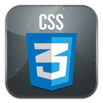

Languages





My name is Andrew and up until a couple of years ago I was an aspiring attorney. However, despite having the passion of becoming a lawyer since I was in elementary school, as I got older, wiser, became a family man, and watched the economy all but sink into a recession, it no longer made sense for me to take on more student debt just become another young attorney in an over-saturated market; fortunately for me, I’ve also had an interest in IT. I considered going back to school to obtain my Masters in an IT related field, however, though that option would be more worthwhile than going to law school, I still didn’t feel comfortable taking on that amount of debt either. Though I’m opting to forego obtaining an advanced degree at this point in time, it doesn’t mean that I’m not going to expand my knowledge and skills. Instead of going the “traditional” education route, I decided that I would try the self-paced route/self-learn method and utilize many of the resources that the internet has to offer. All of the courses and projects that I’ve completed or am in the process of completing can be found on my skills page. In addition to these courses and projects, I am also in the process of studying to obtain multiple certifications, one of which is the Certified Associate in Project Management (CAPM) through the Project Management Institute (PMI). The main reason for this site is to display my skills for employers and even potential clients. While my resume has my acquired skills listed, I believe that displaying these skills is an enhancement to my resume. Also, since I do not have neither an IT related degree nor years of professional experience, I don’t have the opportunity to acquire employment so that I can gain the experience; the good ole Catch 22. I also created this site to encourage others that are in the same position as I am. I want to show them that there are ways to gain experience outside of the work place and to display their skills. What I hope to gain from creating this site is, another Red Letter day, that is the day when I can actually say that I’m an IT project manager. This site will change as I become more proficient in various coding languages. Again, I am trying to display my skills and if I just left the site as is, it’d be nothing more than a cover letter and resume in html format. I want to thank you for stopping by to check out my site. If you feel the urge, shoot over to the ‘Contact’ page and leave me a comment or send me an email, thanks. -Drew B.